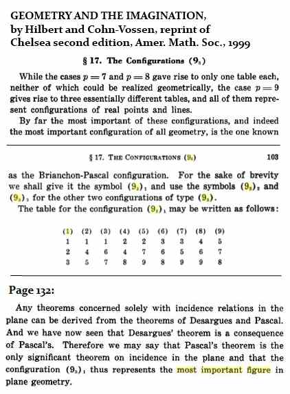

Configurations
and Squares
by Steven H. Cullinane
PART I -- March 29, 2011
4x4 and 3x3
For a definition of
"abstract configuration," see Dolgachev—
Here (93, 124)
is a typographical error for (94,
123).
Note that the two examples Dolgachev mentions here, with 16
points and 9 points, are not unrelated to the geometry of 4×4 and 3×3
square arrays.
The 4×4
Square
For the Kummer and related 16-point configurations, see
section 10.3, "The Three Biplanes of Order 4," in Burkard Polster's A
Geometrical Picture Book (Springer,
1998). See also the
4×4 array described by
Gordon Royle in an undated web page and in 1980 by
Assmus and Sardi—
Click
to enlarge.
For the order of the automorphism group of the Kummer (166,
166), see the
exercises on this configuration— modeled by a 4×4 array— in
R.D. Carmichael's
classic Introduction to the Theory of Groups of Finite Order
(1937) on pages 42 and 43. (Note that Carmichael does not count the
duality exchanging points and blocks as an automorphism. This makes
Carmichael's automorphism group of order 11,520 (=16*(6!)) rather than
23,040.)
For a connection of
this sort of 4×4 geometry to the
geometry of the
diamond theorem, read "The
2-subsets of a 6-set are the points of a PG(3,2)" (a note
from 1986) in light of R.W.H.T. Hudson's 1905 classic Kummer's
Quartic Surface , pages 8-9,
16-17,
44-45,
76-77,
78-79,
and 80.
Here are two examples of how permutations within the
6-sets of the 1986 note induce automorphisms of the Kummer
configuration—
Dolgachev in "Abstract Configurations" also discusses another
configuration, the Cremona-Richmond
(153,
153), closely
related to properties of 6-element sets. The note Inscapes
shows that Figure B in the above 1986 note
describes that (153,
153).
Update to the 4x4 square section on March 24, 2015:
Figure 24 in Coxeter's 1950
remarks on the Möbius 84 configuration
can be rearranged for greater
clarity —
The above rearranged 4x4 square is in
accord with the page on the
Galois tesseract.
The 3×3 Square
For the Hesse configuration, see (for
instance) the passage from Coxeter quoted in Quaternions
in an Affine Galois Plane—
The (83, 83)
Möbius-Kantor configuration here described by Coxeter is of
course part of the larger (94,
123) Hesse
configuration. Simply add the center point of the 3×3 Galois
affine plane and the four lines (1 horizontal, 1 vertical, 2 diagonal)
through the center point.
PART II-- September
7, 2011
The Most Important
Configuration
A search for some background on Gian-Carlo Rota's remarks
in Indiscrete Thoughts * on a geometric
configuration
leads to the following passages in Hilbert and Cohn-Vossen's
classic Geometry and the Imagination—

These authors describe the Brianchon-Pascal configuration
of 9 points and 9 lines, with 3 points on each line
and 3 lines through each point, as being
"the most important configuration of all geometry."
Thus it seems worthwhile to relate it to the material
on the 3x3 array in Part I above.
The Encyclopaedia of Mathematics , ed.
by Michiel Hazewinkel,
supplies a summary of the configuration apparently
derived from Hilbert
and Cohn-Vossen—
My own annotation at right above shows one way to picture the
Brianchon-Pascal points and lines— regarded as those of a finite,
purely combinatorial , configuration— as subsets
of the nine-point
square array discussed in Part I above. The rearrangement of points
in the square yields lines that are in accord with those in
the usual
square picture of the 9-point affine plane.
A more explicit picture—
The Brianchon-Pascal configuration is better known as Pappus's
configuration,
and a search under that name will give an idea of its importance in
geometry.
* Birkhäuser Boston, 1998 2nd printing, p. 145
PART III--
September 8, 2011
Starring the
Diamond
"In any
geometry satisfying Pappus's Theorem,
the four pairs of
opposite points of 83
are joined by four concurrent lines."
-- H. S. M. Coxeter (see below)
Part II related the the Pappus configuration to the "Diamond
Star" figure--
Stylized
version of the
"Diamond
Star" in Part I above
Coxeter, in "Self-Dual Configurations and Regular Graphs,"
also relates Pappus to this figure.
Some excerpts from Coxeter—
The relabeling uses the 8
superscripts
from the first picture above (plus 0).
The order of the superscripts is from a
Singer 8-cycle in the
Galois field GF(9).
The relabeled configuration is used in a discussion of Pappus—
Coxeter here has a note referring to page
335 of G. A. Miller, H. F. Blichfeldt, and L. E.
Dickson, Theory and
Applications of Finite Groups, New
York, 1916.
Coxeter later uses the the 3×3 array (with center omitted)
again to
illustrate the Desargues configuration—
The Desargues configuration is discussed by Gian-Carlo Rota on
pp. 145-146 of Indiscrete Thoughts—
"The value
of Desargues' theorem and the reason
why the statement of this theorem has survived through the centuries,
while other equally striking geometrical theorems have been forgotten,
is in the realization that Desargues' theorem opened a horizon
of possibilities that relate geometry and algebra
in unexpected ways."
{kind=link}
{kind=link}
{kind=link}
{kind=link}
{kind=link}
{kind=link}
{kind=link}
{kind=link}
{kind=link}
{kind=link}
{kind=link}